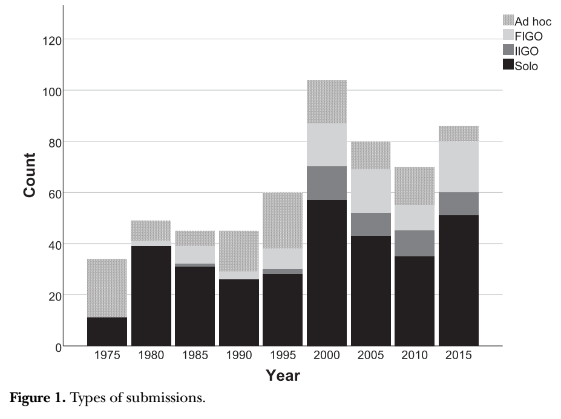
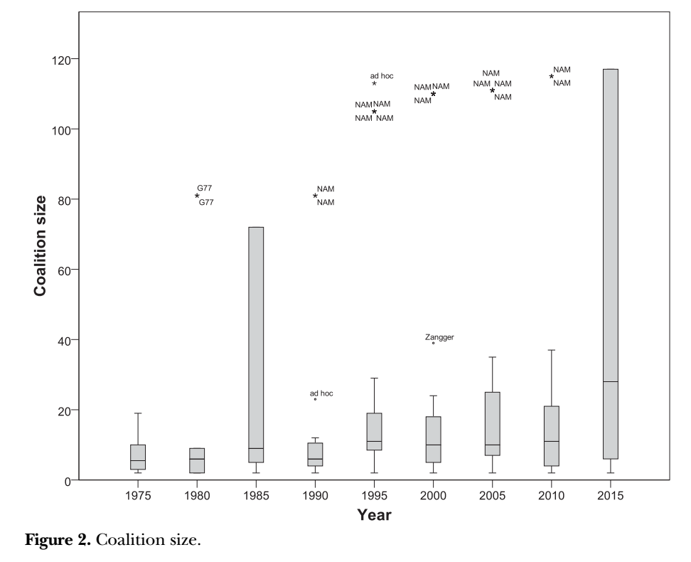
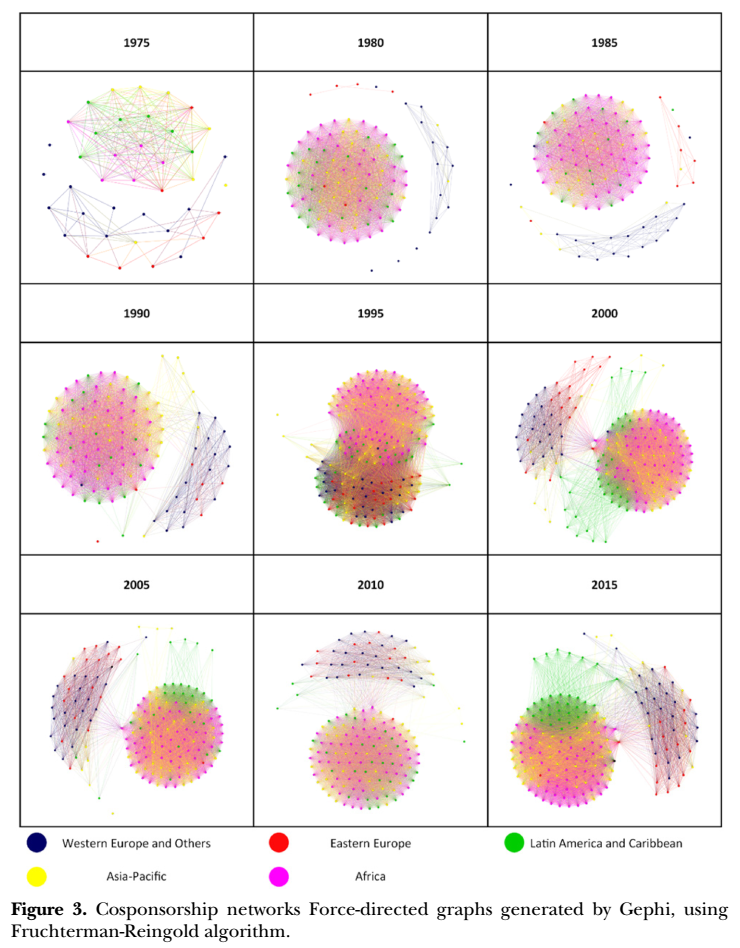
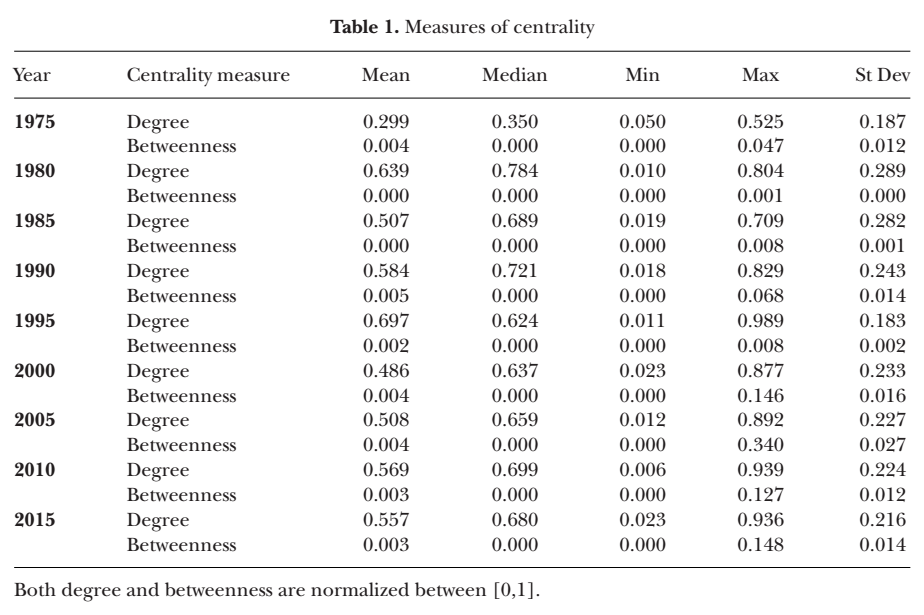
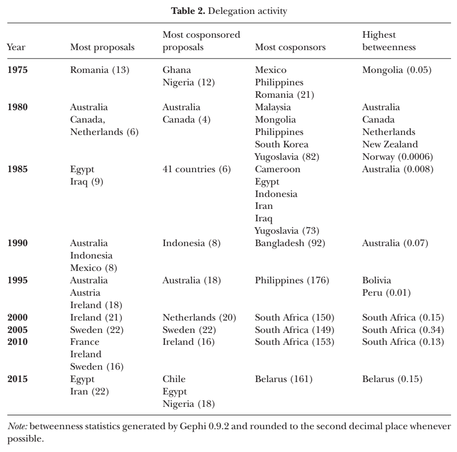
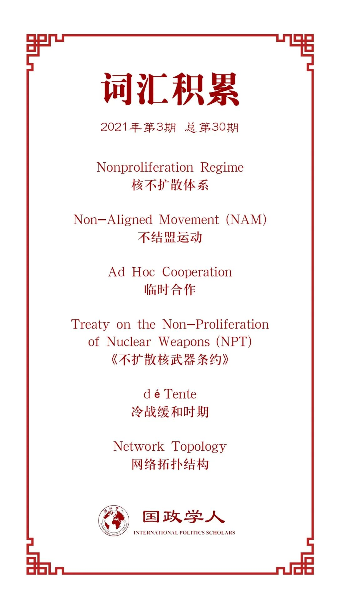
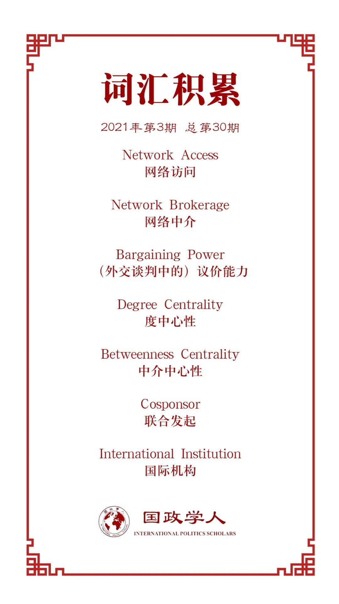

收录于合集

作品简介
【作者】 Michal Onderco，鹿特丹伊拉斯姆斯大学国际关系学副教授，主要研究方向为多边核外交政治，研究成果见载于 International Studies Quarterly ， International Studies Review , European Journal of Political Research 等国际顶级期刊。
【编译】 阮辰阳（国政学人编译员，复旦大学国际政治系本科生）
【校对】 石雨宸
【审核】 李博轩
【排版】 陈旻雨
【美编 】李九阳
【来源】 Onderco, Michal. “Collaboration networks in conference diplomacy: The case of the nonproliferation regime.” International Studies Review 22.4 (2020): 739-757.
【归档】 《国际关系前沿》2021年第3期，总第30期。
期刊简介
《国际研究评论》（International Studies Review）创刊于1957年，原名为Mershon International Studies Review，于1999年更改为当前的刊名，卷编号从1重新开始。该期刊是由牛津大学出版社代表国际研究协会出版的同行评审学术期刊，以季刊形式发行。主编是Amanda Murdie。2019年影响因子（Impact Factor）为2.232，在“国际关系”类别的95种期刊中排名第20位。
会议外交中的合作网络：
以核不扩散体系为例
Collaboration Networks in Conference Diplomacy: The Case of the Nonproliferation Regime
Michal Onderco
内容提要
多边会议是国际政治的基础。在多边会议的场合下，国家可能独自追求自身利益，但它们更常倾向于通过结盟获得利益。这些联盟相互重叠，形成网络结构。国家构建并利用网络来推动有利的议程项目或阻滞对自身不利的议程项目。这些网络有的基于正式机构（如不结盟运动或欧盟），有的基于临时合作（ad hoc cooperation）或现存的非正式机构（如核供应国集团、新议程联盟或桑戈委员会）。
本文以五年一次举办的不扩散核武器条约审议大会为例，探究会议内部的国家网络如何发展与转变。研究表明， 自核不扩散体系建立以来，70年代冷战缓和时期，西方国家与苏东国家在该议题上展开合作，因而会议以第三世界国家为界形成两大联盟网络；随着冷战局势重新紧张，西方国家与苏东国家之间的合作瓦解，在80年代中期形成不结盟运动国家、西方国家与苏东国家三大联盟网络的划分；后冷战时期，西方国家与前苏东国家之间的合作在冷战结束后迅速恢复，除 1995年大会情况特殊之外，会议总体呈现出两大联盟网络的划分，其一为不结盟运动国家，另一为以核国家及其盟友为主的北方国家。 在各个时期，各联盟网络内部合作均频繁紧密，而网络之间的合作较为罕见。 此外，就联盟网络类型而言， 临时合作逐步被正式或非正式国家间组织取代。
文章导读
01
引入
本文回答的问题是，国际会议中的外交合作模式是否随时间发生变化，如果是，变化又是怎样发生的？作者认为，由于各国想要推进不同利益，它们常常组成基于单一议题的联盟，由此导致出现了相互重叠的联盟结构，而这种结构可以被概念化为网络。利用网络分析的方法，本文将从网络拓扑结构（network topology）、网络访问（network access）与网络中介（network brokerage）三个角度对合作进行分析。
本文按照以下方式展开：首先论述联盟的重要性，并展示了网络结构给参与合作的国家带来的具体优势。其次介绍绘制这些网络的方法（即建立模型）。最后对数据进行分析并给出研究结果。
02
会议外交中的联盟逻辑
参与外交会议对一国而言成本较高，在派遣外交官与会带来的直接成本之外，还有为了充分参与谈判而需要的专业知识成本。 在正式外交场合中建立联盟一方面可以帮助国家克服参与外交会议所面临的结构性限制 （正如联合国安理会的非常任理事国面临的限制）， 另一方面可以降低上述成本，还可以提升外交谈判中的议价能力。
03
**
**
多边外交中的拓扑结构、
访问与中介
在联盟网络内部，节点（即国家）的位置可以通过一些参数表现，其中最基本的两个参数为 度中心性 （degree centrality）与 中介中心性 （betweenness centrality）。度中心性衡量的是节点的访问性，即 一国与其他国家连接数量占整体网络内国家总数的比值 。中介中心性衡量的是节点的中介性，即 通过一国的任两个其他国家最短路径的数量 。
04
不扩散核武器条约审议大会中外交网络的转变
1、联盟类型
联盟网络有三种主要来源：临时联盟、正式的政府间组织与非正式的政府间组织。在临时联盟中，国家仅围绕单一议题展开一次合作。正式的政府间组织（formal intergovernmental organization, FIGO）成员之间长期合作，在内部意见一致后以联盟形式提出提案。非正式的政府间组织（informal intergovernmental organization, IIGO）呈递提案的方式与FIGO类似，但长期合作的形式相比正式组织更为松散，不存在约束性框架。

图1
图1展示了1975年以来每届大会收到提案的类型分布。由图可知，单一国家递交提案（Solo）的占比持续可观。至于合作，就核不扩散体系而言，临时合作逐渐被更为制度化的合作方式（即正式或非正式国家间组织）取代。
图2揭示有关联盟规模（即共同发起一项特定提案的国家数量）的信息。

图2
由图可知，总体而言，联盟规模逐渐增大。联盟平均规模的扩大源于不结盟运动成员国的增多。至于联盟规模中位数，除2015年以外，此前中位数的提升并不显著。
2、拓扑结构

图3
图3展现的是历届不扩散核武器条约审议大会内合作模式的演变。图中节点表示国家，边表示两国共同发起了至少一项提案，孤立节点表示该国提交了至少一项提案但没有任何共同提案。
接下来 对历届大会联盟网络进行分析 。1975年的第一届大会呈现两个组别的合作，一边是第三世界国家（图示顶部），另一半是西方国家与苏东国家（图示底部）。1980年，尽管第三世界国家演变为不结盟运动集团，集团内部合作依然持续；同时，西方国家与苏东国家之间的合作瓦解，苏联卫星国之间的合作也停止，因而形成不结盟运动与西方国家（图示右侧）两大联盟网络。1985年呈现出三个互不合作的联盟网络，它们分别是不结盟运动、西方国家阵营与苏东国家阵营。随着冷战结束（1990年），西方国家与前苏东国家的合作恢复形成同一网络，该网络与不结盟运动网络之间开始出现相互合作的迹象。1995年的合作模式较为特殊，由于该届大会旨在讨论条约续签事宜，不结盟运动国家内部就该问题发生分裂，一方发起支持条约无限延续的提案，另一方则表示反对（图示顶部），因而形成三个联盟网络。2000年，合作模式恢复到后冷战早期（1990年）的形势并延续至今，两大联盟网络分别为北方国家（包括条约承认的所有核国家及其盟友与中立国）与不结盟运动国家，中国也从1995年时的局外者转而向北方国家集群靠拢。总之，在核不扩散体系方面，全球政治自始至终呈现出结构性冲突。
由图3还可得知， 各联盟网络内部合作紧密 ，而网络之间合作稀疏。整体而言， 尽管所有节点（国家）组成的整体网络密度随时间推移略微增大，但该密度仍相对较低，这一现象表明联盟网络之间的合作依然十分有限且并未增多 。
3、访问（access）与中介（brokerage）
**
**
表1

表1统计了度中心性（degree centrality）与中介中心性（betweenness centrality）这两大指标。由表可知， 中介中心性较低，表明历届大会联盟网络间的合作均较为稀少 。此外， 度中心性的平均数与中位数总体提升，表明国家之间合作（即作为提案共同发起国的情况）总体增多 ；而 度中心性的标准偏差同时增加，表明有很大一部分国家与他国的合作越发偏离整体网络平均水准 。
表2

表2展示了1975年以来发起提案最为活跃的成员国。由表可知， 中等国家而非大国是最为活跃的提案发起国与联合发起国 。就中介中心性而言，自1995年《不扩散核武器条约》无限期延续后， 南非与白俄罗斯成为中介中心性最高的国家 ，起到连接不同联盟网络的中介作用，进而有助于核不扩散体系的创新。 另外， 中介中心性最高的国家中大国未列其中，表明核不扩散体系内的制度性强国并非处于整体网络中心。 究其原因，在于 这些大国由于自身制度性权力获得了与众不同的谈判地位，使它们不需要在条约内与他国合作便能达成自身利益。
05
结论
综上，通过数据分析，本文得出如下论点：
1、核不扩散体系内部的主要矛盾存在于不结盟运动国家与其他国家（以核国家、核国家相邻国家及其盟友为主）之间。
2、在冷战缓和时期，西方国家和苏东国家在体系内展开合作，80年代这一合作模式瓦解，冷战结束后立即恢复。
3、除1995年不扩散核武器条约审议大会异常以外，后冷战时期的大会均呈现出非常类似的合作模式，即不结盟运动和北方国家两大联盟网络内部展开密集合作，同时只有少量国家和两大联盟网络均有合作。
4、该体系下，联盟的持久性逐渐提升，这一点可从后冷战时期联盟拓扑结构基本不变看出。同时，联盟类型分布发生变化，国家的临时联盟越发罕见，让位于基于正式或非正式政府间组织的更为机制化与稳定的长期联盟。
5、大部分国家中介中心性很低，不会发展自身所处联盟网络以外的合作，这一现象表明它们缺乏影响该体系的兴趣；而中介中心性较高的个别国家能够很好地起到联盟网络之间的桥梁作用，有助于体系创新。但总体而言，核不扩散体系内部的外交谈判愈发陷入既有合作模式，侵蚀了体系变革能力，无法为体系内部涌现的各种问题提供新的解决方式。
6、主要核武器大国并未在体系整体网络中占据显要位置。这一现象可能由以下几点原因造成：第一，制度性权力较强的核武器大国有能力通过发起提案之外的其他方式影响谈判结果；第二，核武器大国对《不扩散核武器条约》的审议本身不感兴趣。因此，在核不扩散体系中，制度性权力与结构性权力并没有明确的相关性。
本项研究为理解多边外交政治提供了新的分析方法。这一网络分析方法可以运用于诸如贸易与气候谈判等领域，无需考察投票情况便可以分析领域内的合作模式。未来研究可以关注以上领域内合作模式的演变过程、体系的结构性矛盾以及该矛盾的持存状态。
译者评述
本文的核心观点是，在《不扩散核武器条约》（以下简称NPT）生效初期（70年代）与后冷战的大部分时期（除1995年外）核不扩散体系呈现两大联盟网络，一方是不结盟运动（以下简称NAM），另一方是以核大国及其盟友为主的其他国家。然而，本文并未具体论述NAM国家与核大国立场的分歧点。对此，评述部分将从上述提及的两个时期入手试图回答以上问题。
若要理解NPT生效初期的谈判联盟的立场以及之间的分歧，则需要将NPT谈判期也考虑在内。 美苏两国认为条约有必要签订，主要源于以下考虑 ：第一，两国担心因放任核扩散而致核武器落于独裁者手中；第二，两国需防止西德、中国等国发展自主核力量，如果未来出现“核多极”格局，两国不仅会受到来自更多核威胁，而且在国际事务上的影响力会下降；第三，核扩散导致的全球不稳定将使两大阵营间威胁认知发生改变，不利于区域（特别是欧洲）稳定，因而两国需给出一项全球性方案以防核扩散所致的不确定性。 两国通过内部谈判达成的共同立场包括 ：第一，两国注重核不扩散而忽视核裁军与核能和平使用，反对在NPT中加入有关核裁军实质步骤的条款，也反对达成全面禁止核试验的条约；第二，两国都认为核不扩散应该是一项独立的、不带附加条件的措施；第三，两国均支持加强国际原子能结构（以下简称IAEA）的保障监督标准，力求构建统一的核能保障监督体系。另一边， 以NAM国家为代表的非核国的立场主要为 ：第一，NAM建议采取切实措施停止核军备竞赛，注重探讨完全核裁军的方法，关注核能和平使用的问题，并力图禁止全面核试验；第二，NAM希望将核不扩散与核裁军及核设施的保障监督标准进行议题联系；第三，NAM支持非歧视性的、统一的保障监督标准；第四，核国家应被禁止对非核国使用或威胁使用核武器，禁止在非核国领土部署核武器，同时应防止将生产核武器的相关信息传递至非核国；第五，非核国则需承诺不生产或控制核武器，同时鼓励非核国自愿加入无核俱乐部并建立无核区。
后冷战时期，在除1995年外的历届NPT审议大会上， 以核大国及其盟友为代表的北方国家的立场为 ：第一，北方国家相比核裁军更强调核不扩散，倾向于不附带核裁军条件无限期延长条约，且并没有提出完全销毁核武器的意愿及设定销毁的截止时间；第二，北方国家虽然也赞同召开核武器大会，但对核武器的处置比较温和，只是提出降低核弹头数量及采用不首先使用核武器的原则；第三，北方国家认为遵守IAEA附加议定书是一种义务，公开支持附加议定书作为核查标准（IAEA附加议定书旨在提供给IAEA附加工具以核实核材料是否转移及探测是否存在未公开的核材料与核活动）；第四，北方国家认为自身已经在核裁军方面取得足够进展，因而敦促非核国在核不扩散方面做出更多让步；第五，北方国家后期开始反对1995年有关中东的决议。另一边， NAM国家的主要立场如下 ：第一，NAM国家将核裁军议题作为长期目标，提出含有明确时间限制的核裁军框架（即2025年完全销毁核武器），而核不扩散只是通往核裁军的中间阶段；第二，NAM国家希望开展核武器大会有禁止核武器的生产、储存和使用并最终销毁核武器，并进一步希望通过核燃料削减条约的谈判具体解决核武器储备的问题；第三，一部分NAM国家认为遵守IAEA附加议定书符合自愿原则即可，另一部分NAM成员国与观察国则公开反对附加议定书；第四，NAM国家希望得到核国家不对非核国使用或威胁使用核武器的保证；第五，NAM国家认为任何国家间组织都有缔结完全废除域内核武器条约的权利，例如以埃及为首的阿拉伯集团推动了1995年大会上有关中东决议的通过，该决议呼吁所有中东国家加入NPT并建立可核实的无核区。
通过以上立场分歧的罗列，以核大国为主的北方国家集团与NAM为何分属核不扩散体系中不同的联盟网络这一问题得到了初步解答。由此，对2021年1月生效的《禁止核武器条约》内外的联盟网络之探讨可以成为针对核不扩散体系的下一研究方向。
参考文献
[1] POTTER, WILLIAM C., AND GAUKHAR MUKHATZHANOVA. 2012. Nuclear Politics and the Non-Aligned Movement: Principles vs. Pragmatism. London: Routledge.
[2] POPP, ROLAND. 2017. “The Long Road to the NPT: From Superpower Collusion to Global Compromise.”
In Negotiating the Nuclear Non-proliferation Treaty: Origins of the Nuclear Order , edited by Roland Popp, Liviu Horovitz, and Andreas Wenger, 9–36. Abingdon, UK: Routledge.
词汇整理
 
文章观点不代表本平台观点，本平台评译分享的文章均出于专业学习之用, 不以任何盈利为目的，内容主要呈现对原文的介绍，原文内容请通过各高校购买的数据库自行下载。
好好学习，天天“在看”
国政学人
支持学术公益与知识传播
微信扫一扫赞赏作者 __赞赏
已喜欢，对作者说句悄悄话
取消 __
发送给作者
发送
最多40字，当前共字
上一页 1/3 下一页
长按二维码向我转账
支持学术公益与知识传播
受苹果公司新规定影响，微信 iOS 版的赞赏功能被关闭，可通过二维码转账支持公众号。